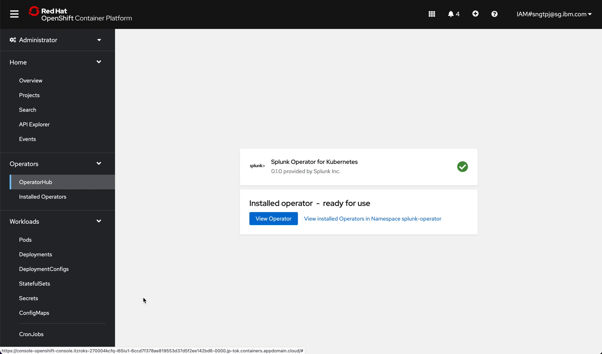
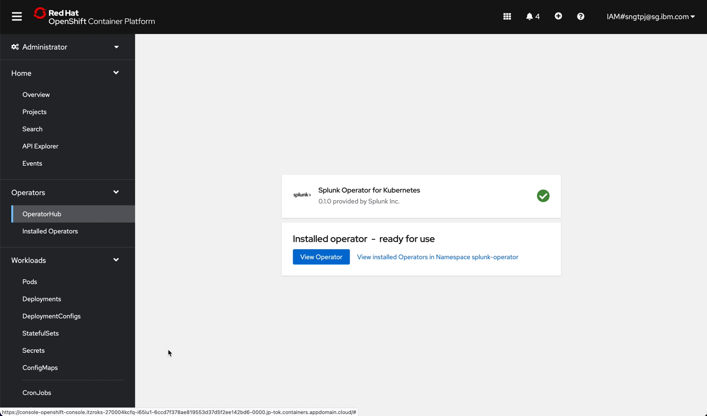

2. Splunk
The following provides guidance in setting splunk on OpenShift using the community splunk-operator.
Prerequisite
OpenShift cluster
2.1. Deploy Splunk Operator
2.1.1. login to OpenShift
get OpenShift login credential
from a terminal, login to openshift
2.1.2. create project
You can create the project in advance and choose the created project when you install the splunk-operator. Alternatively, you can also create project aka namesapce during installatin of splunk-operator.
oc new-project splunk-operator
create splunk-operator namespace aka project
2.1.3. install the operator
install the operator using openshift UI

 

2.2. Deploy Splunk Enterprise Standalone
install the standalone splunk server
2.2.1. Deploy Splunk standalone


2.2.1.1. get password for splunk web
to get the password to login Splunk as admin
oc get secret splunk-example-standalone-secrets -o custom-columns=PASSWORD:.data.password --no-headers | base64 -D
2.2.1.2. quick local test splunk web
to test Splunk Web with your machine locally, you need to forward the port, run the following command in terminal.
kubectl port-forward splunk-example-standalone-0 8000
After you have forward the port locally, by default, the Splunk web is accessbile using using http @ http://localhost:8000
You can login to Splunk and configure to use SSL later.
2.3. Test drive splunk
clink on the route to Splunk web, login to see the following.
2.3.1. Configure Splunk
2.3.1.1. Splunk preferences (Optional)
Global preferences
SPL Editor
2.3.1.2. Server settings
General settings
2.3.1.3. Server controls
to restart the server after your changes in configuration.
2.3.1.4. Users (Optional)
You can add users and roles accordingly.
Add user
2.3.2. Add data
you can access Add data from the Splunk Web home page or from the Settings menu.
You can download Splunk tutorial zip to test out the add data.
2.3.3. Search data
after you add the tutorial data, you can test the search, see the link to the tutorials at Resources below.
2.3.4. create route
After setting the Splunk to be served using https, you can expose your Splunk Web and API to be accessbile outside of OCP cluster.
To do that, you will need to create routes using port 8000 and 8089 for Splunk Web and Splunk REST API respectively.
2.3.4.1. Create route for Splunk web
Provide a name for the route and set the following as shown and choose port 8000.
2.3.4.2. Create route for Splunk REST API
Provide a name for the route and set the following as shown and choose port 8089.
2.3.4.3. Splunk public
You should have two routes where Splunk is accessible publicly, clink on the Location link.